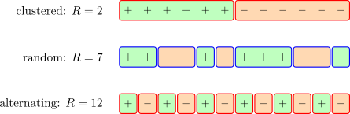

6.4 The K Sample K-S Statistic
Let \(X_1,X_2,\dots ,X_k\), for some \(i=1,2,\dots ,k\) be \(k\) independent samples drawn respectively from distributions with cdf
\[F_i(x):\hspace {0.3cm} i=1,2,\dots ,k\]
Let \(\widehat {F}_i(X)\) denote the edf of the \(i^{th}\) sample.
To test \(H_0\) that \(F_i(X)\) are identical
\[H_0:F_1(x)=F_2(x)=\dots =F_k(x)\hspace {0.4cm}\text {vs}\hspace {0.4cm} H_a:F_1(x)\geq F_2(x)\geq \dots \geq F_k(x)\]
The test statistic is computed as follows
\[D^+(k,n)=\sup _{x:\,i<k}\Big \{\widehat {F}_i(x)-\widehat {F}_{i+1}(x)\Big \}\]
and, in the same fashion, the opposite ordering
\[H_a:F_1(x)\leq F_2(x)\leq \dots \leq F_k(x)\]
is tested with
\[D^-(k,n)=\sup _{x:\,i<k}\Big \{\widehat {F}_{i+1}(x)-\widehat {F}_i(x)\Big \}\]
Both are suprema of differences between empirical distribution functions; the hat belongs on every \(F\)
here, since no population cdf is known.
Example 6.2. A random sample of \(n=8\) people gives the number of times each swam in the past month: \[0,\hspace {0.4cm}1,\hspace {0.4cm}2,\hspace {0.4cm}2,\hspace {0.4cm}4,\hspace {0.4cm}6,\hspace {0.4cm}6,\hspace {0.4cm}7 .\] Calculate the empirical distribution function \(\widehat {F}_n(x)\).
Solution. By definition \(\widehat {F}_n(x)\) is the proportion of the sample not exceeding \(x\), \[\widehat {F}_n(x)=\dfrac {\#\left \{i:x_i\leq x\right \}}{n},\] so it starts at \(0\), jumps by \(1/8\) at each observation, and reaches \(1\) at the largest. Where a value is repeated the jump is doubled: there are two \(2\)s and two \(6\)s, so the steps at those points are \(2/8\).
Counting through the sorted data,
| \(x\) | \(0\) | \(1\) | \(2\) | \(4\) | \(6\) | \(7\) |
| number of \(x_i\leq x\) | 1 | 2 | 4 | 5 | 7 | 8 |
| \(\widehat {F}_n(x)\) | \(1/8\) | \(2/8\) | \(4/8\) | \(5/8\) | \(7/8\) | \(8/8\) |
and \(\widehat {F}_n\) holds each value until the next observation is reached: \[ \widehat {F}_n(x)= \begin {cases} 0, & x<0\\ 1/8, & 0\leq x<1\\ 2/8, & 1\leq x<2\\ 4/8, & 2\leq x<4\\ 5/8, & 4\leq x<6\\ 7/8, & 6\leq x<7\\ 1, & x\geq 7 \end {cases} \]

Note 6.3. Two points about \(\widehat {F}_n\) are worth fixing in mind, because both are routinely got wrong.
It is a cumulative function, so the quantity attached to each branch is \(P\left (X\leq x\right )\) and not \(P(X=x)\). At \(x=2\) the value is \(4/8\), being the four observations \(0,1,2,2\) that do not exceed \(2\); the probability of the value \(2\) itself is only \(2/8\).
The branches must be disjoint intervals, not a list of \(x\leq c\) conditions. Every one of \(x\leq 0\), \(x\leq 1\), \(x\leq 2\) is satisfied by \(x=-3\), so such a list does not define a function at all. The condition that goes with \(4/8\) is \(2\leq x<4\).
Example 6.4. The following \(n=8\) data points are observed: \[1.41,\hspace {0.4cm}0.26,\hspace {0.4cm}1.97,\hspace {0.4cm}0.33,\hspace {0.4cm} 0.55,\hspace {0.4cm}0.77,\hspace {0.4cm}1.46,\hspace {0.4cm}1.18 .\] Is there evidence at the \(5\%\) level that they were not sampled from the uniform distribution on \((0,2)\)?
Solution. The hypothesised cdf. The uniform density on \((a,b)=(0,2)\) is \(f(x)=\dfrac {1}{b-a}=\dfrac {1}{2}\), so \[F_0(x)=P(X\leq x)=\int \limits ^{x}_{0}\dfrac {1}{2}\,dx=\dfrac {x}{2}, \hspace {0.8cm}0<x<2 .\] Note that \(H_0\) names the distribution completely, with no parameters estimated from the data; this is what the tabulated critical values assume.
Order the data and tabulate. Sorting gives \(0.26,\ 0.33,\ 0.55,\ 0.77,\ 1.18,\ 1.41,\ 1.46,\ 1.97\), and since \(\widehat {F}_n\) jumps at each observation the comparison must be made on both sides of every jump: \[D^{+}_n=\max _{i}\left [\dfrac {i}{n}-F_0\left (x_{(i)}\right )\right ], \hspace {0.8cm} D^{-}_n=\max _{i}\left [F_0\left (x_{(i)}\right )-\dfrac {i-1}{n}\right ].\]
| \(i\) | \(x_{(i)}\) | \(\widehat {F}_n\left (x_{(i)}\right )\) | \(\widehat {F}_n\left (x_{(i-1)}\right )\) | \(F_0\left (x_{(i)}\right )\) | \(D^{+}\) | \(D^{-}\) |
| 1 | 0.26 | 0.125 | 0.000 | 0.130 | \(-0.005\) | \(0.130\) |
| 2 | 0.33 | 0.250 | 0.125 | 0.165 | \(0.085\) | \(0.040\) |
| 3 | 0.55 | 0.375 | 0.250 | 0.275 | \(0.100\) | \(0.025\) |
| 4 | 0.77 | 0.500 | 0.375 | 0.385 | \(0.115\) | \(0.010\) |
| 5 | 1.18 | 0.625 | 0.500 | 0.590 | \(0.035\) | \(0.090\) |
| 6 | 1.41 | 0.750 | 0.625 | 0.705 | \(0.045\) | \(0.080\) |
| 7 | 1.46 | 0.875 | 0.750 | 0.730 | \(\mathbf {0.145}\) | \(-0.020\) |
| 8 | 1.97 | 1.000 | 0.875 | 0.985 | \(0.015\) | \(0.110\) |
The two negative entries are not errors: at \(i=1\) the step function is momentarily below \(F_0\) and at \(i=7\) momentarily above, and such rows simply cannot supply the maximum. Both columns must still be computed, since the largest gap may occur on either side.
The statistic. \[\max D^{+}_n=0.145\hspace {0.4cm}(\text {at } i=7),\hspace {0.8cm} \max D^{-}_n=0.130\hspace {0.4cm}(\text {at } i=1),\] \begin {align*} D_n &=\max \left \{D^{+}_n,\ D^{-}_n\right \}\\ &=\max \{0.145,\ 0.130\}\\ &=0.145 . \end {align*}
Critical value. For \(n=8\) at \(\alpha =0.05\) the tabulated value is \[D_8(0.05)=0.45427\approx 0.454 ,\] and \(H_0\) is rejected when \(D_8>D_8(0.05)\).
Conclusion. Since \(0.145<0.454\) we fail to reject \(H_0\). There is no evidence at the \(5\%\) level that the data came from anything other than the uniform distribution on \((0,2)\).
Note 6.5. The critical value \(0.454\) is very large — the empirical distribution function would have to depart from \(F_0\) by nearly half its total range before eight observations could rule the uniform out. This is not a defect of the K–S test but a fact about small samples: eight points are consistent with a great many distributions, and failing to reject here says almost nothing about whether the data really are uniform.
The absence of evidence against \(H_0\) is not evidence for it. Had the same \(D=0.145\) been obtained from \(n=200\), where \(D_{200}(0.05)\approx 0.096\), the verdict would have been reversed.
Questions on this section
Stuck on something here? Ask below and it stays attached to this topic.